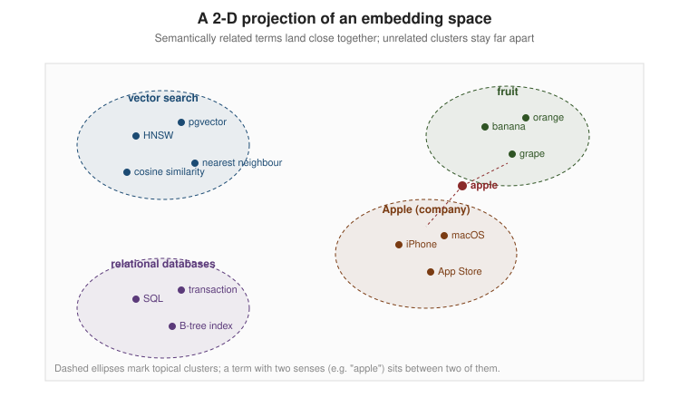
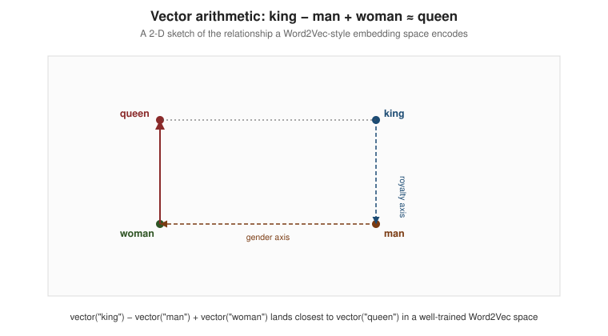

Embeddings
|
This content was generated with the assistance of AI and should be verified against the official documentation before being relied on in production. |
Examples on this page target Python 3.12, gensim 4.3, sentence-transformers 6.1 and the all-MiniLM-L6-v2
model (384 dimensions) as a small, standalone demo model — separate from the DocsAssistant scenario’s own
768-dimension Ollama nomic-embed-text model, which is covered on
Generating Embeddings in Practice. This page is about what an embedding is
and where it comes from; the previous page,
What Is a Vector Database?, introduced the vector data type and its
operations without explaining how the numbers themselves are produced. Before any of that, the text is first
split into the token IDs an embedding model actually consumes, as covered on
Tokens & Tokenization.
Embedding as a verb, embedding as a noun
"Embedding" names both a process and its result. As a verb, to embed a piece of data is to run it through a model that maps it to a point in a fixed-size, continuous vector space. As a noun, an embedding is that point: an array of floating-point numbers (typically hundreds to a few thousand components) that stands in for the original text, image or other object.
The property that makes embeddings useful is that the geometry of the space carries meaning: items that are semantically similar end up close together (by cosine similarity or Euclidean distance), and items that are unrelated end up far apart. This is what the previous page relied on without explaining it — a query embedding for "how do I speed up similarity search" lands near a chunk embedding for "HNSW indexes" not because the two share many words, but because a model trained on enough text has learned that they occur in similar contexts.
That last idea is the distributional hypothesis, usually summarised as "a word is characterised by the company it keeps" (J. R. Firth). Embedding models do not need to be told that "queen" and "monarch" are related; they only need enough text in which the two words appear in similar surrounding contexts, and an objective that rewards placing words with similar contexts close together in the vector space.

A real embedding space has hundreds or thousands of dimensions; the figure above sketches what a 2-D projection of one would look like, with topically related terms forming visible clusters and an ambiguous term such as "apple" sitting between the two senses it can take (the fruit and the company).
Word2Vec: learning word vectors from context
Word2Vec (Mikolov et al., 2013) was one of the first widely used models to turn the distributional hypothesis into a practical embedding technique for words. It trains a shallow neural network on one of two prediction tasks:
-
CBOW (Continuous Bag of Words) — predict a target word from the words surrounding it in a fixed-size window.
-
Skip-gram — the reverse task: predict the surrounding context words from a single target word. Skip-gram tends to do better on rare words, at a higher training cost.
Neither task is the point. The point is a side effect of training: the hidden-layer weight matrix that the network learns to solve the prediction task turns out to be a good embedding table, because words that predict similar contexts end up with similar weight vectors. Once trained, the network itself is discarded and only that weight matrix is kept as a lookup table from word to vector.
Vector arithmetic: king − man + woman
The famous demonstration of Word2Vec’s geometry is analogical reasoning done as vector arithmetic: taking the vector for "king", subtracting the vector for "man" and adding the vector for "woman" lands close to the vector for "queen". This works because the model has separated a "royalty" direction from a "gender" direction in the space, and the arithmetic composes them.

The following snippet reproduces the example with gensim’s pretrained `word2vec-google-news-300 vectors
(a 300-dimensional model trained on roughly 100 billion words of Google News text). The smaller
glove-wiki-gigaword-100 model works as a lighter-weight substitute if the 1.6 GB download is impractical:
import gensim.downloader as api
# "word2vec-google-news-300" is ~1.6 GB; "glove-wiki-gigaword-100" (~130 MB) is a lighter substitute
model = api.load("word2vec-google-news-300")
result = model.most_similar(positive=["king", "woman"], negative=["man"], topn=3)
for word, score in result:
print(f"{word}: {score:.4f}")
# queen: 0.7118
# monarch: 0.6190
# princess: 0.5902most_similar computes positive vectors summed minus negative vectors summed, then returns the closest
vocabulary entries to that resulting point by cosine similarity — exactly the arithmetic the diagram above
sketches. See the
gensim
KeyedVectors.most_similar documentation and the
gensim Word2Vec module documentation.
Word2Vec has two structural limitations worth naming up front, because the rest of this page exists to address them: it produces exactly one vector per word regardless of context (so "bank" the riverbank and "bank" the financial institution share a vector), and it has nothing to say about a word it never saw during training (out-of-vocabulary words get no embedding at all).
Doc2Vec: embedding whole documents
Doc2Vec (also from Mikolov’s team, 2014) extends the same idea from words to whole paragraphs or documents. It adds a document-level vector into the same CBOW/skip-gram-style prediction task, so that vector is trained alongside the word vectors and ends up summarising the document as a single point:
from gensim.models.doc2vec import Doc2Vec, TaggedDocument
docs = [
TaggedDocument(words=["hnsw", "indexes", "approximate", "nearest", "neighbour"], tags=["hnsw-doc"]),
TaggedDocument(words=["pgvector", "postgresql", "extension", "vector", "column"], tags=["pgvector-doc"]),
]
model = Doc2Vec(docs, vector_size=50, window=2, min_count=1, epochs=40)
print(model.dv["hnsw-doc"][:5])See the gensim Doc2Vec module documentation. In
practice, Doc2Vec has been largely superseded by pooling transformer token embeddings (below) or by models
trained directly to embed whole passages, both of which handle longer, more varied text better.
Transformer embeddings
Word2Vec and Doc2Vec both predate the transformer architecture and produce static embeddings: one fixed vector per word, independent of the sentence it appears in. Transformer-based language models changed that by producing contextual embeddings, where the same word gets a different vector depending on its surrounding text.
Transformer architectures used for embeddings fall into three families:
-
Encoder-only (e.g. BERT and its descendants) — reads the whole input at once, in both directions, and produces a contextual representation for every token. This is the family most embedding models (including sentence-transformers, below) are built on, because bidirectional context suits representing meaning rather than generating text.
-
Decoder-only (e.g. GPT-style models) — reads left-to-right and is optimised for generating the next token. Decoder-only models can still be adapted to produce embeddings (usually by pooling their hidden states), which is how some large hosted embedding APIs are built, but they were not designed for it the way encoder-only models were.
-
Encoder-decoder (e.g. T5) — pairs an encoder that reads the input with a decoder that generates an output sequence, and is mainly used for sequence-to-sequence tasks (translation, summarisation) rather than as an embedding source, though its encoder half can be repurposed the same way a plain encoder can.
Contextual embeddings: disambiguating "bank"
Because a transformer encoder attends over the whole sentence, the vector it produces for "bank" in "I deposited the money at the bank" differs from the vector for "bank" in "We sat by the river bank" — solving Word2Vec’s single-vector-per-word limitation directly.
sentence-transformers wraps a transformer encoder with a pooling step that turns its per-token vectors into
one whole-sentence vector, which is the level most retrieval systems actually need (a chunk or a query, not a
single word). The following snippet uses the small, general-purpose all-MiniLM-L6-v2 model (384 dimensions)
to embed the two "bank" sentences and compares them with cosine similarity:
from sentence_transformers import SentenceTransformer, util
model = SentenceTransformer("all-MiniLM-L6-v2")
sentence_a = "I deposited the money at the bank."
sentence_b = "We sat by the river bank and watched the water."
sentence_c = "The bank approved my mortgage application."
embeddings = model.encode([sentence_a, sentence_b, sentence_c], normalize_embeddings=True)
print(util.cos_sim(embeddings[0], embeddings[1]).item()) # financial vs. river bank -- lower
print(util.cos_sim(embeddings[0], embeddings[2]).item()) # financial vs. financial -- higherThe financial-institution pair (sentence_a/sentence_c) comes out with a higher cosine similarity than the
financial/riverbank pair (sentence_a/sentence_b), because the surrounding words ("deposited",
"mortgage") versus ("river", "sat") push the model toward different senses of "bank" even though the word
itself is identical. See the
sentence-transformers usage guide and the
SentenceTransformer.encode API reference.
Dedicated embedding models
A general-purpose language model can produce usable embeddings by pooling its hidden states, but models trained specifically to embed — SBERT and its many successors — consistently outperform that approach for retrieval, because their training objective directly optimises the property retrieval needs: similar texts close together, dissimilar texts far apart.
Contrastive training
The dominant training technique is contrastive learning: the model is shown an anchor text together with a positive example (a genuine paraphrase, a question and its correct answer, a passage known to be relevant) and one or more negative examples (unrelated or, in hard-negative mining, superficially similar but actually irrelevant text). The training objective pulls the anchor’s embedding toward the positive’s embedding and pushes it away from the negatives', batch by batch, until the geometry of the space reflects relevance rather than surface word overlap. This is the same idea contrastive image-text training (CLIP, below) reuses across modalities.
Dimensions and their cost
A model’s output dimensionality is a design choice with real trade-offs: more dimensions can encode more
nuance and tend to raise retrieval quality benchmarks, but every added dimension costs storage (dimensions ×
4 bytes per vector in float32, before any index overhead), index build and search time, and network transfer
for hosted APIs. Generating Embeddings in Practice compares several current
models' dimension counts alongside quality and latency; Quantization & Compression
covers shrinking a chosen dimensionality’s storage cost after the fact.
Matryoshka embeddings: truncating without retraining
Matryoshka Representation Learning trains a model so that a prefix of its output vector is, by itself, already a good lower-dimensional embedding — like the nested Russian dolls the name refers to, a smaller version is packed inside the full one. This lets a deployment cut a Matryoshka-trained model’s output down to fewer dimensions at query time with no retraining and only a modest, predictable quality loss, trading accuracy for storage and speed on demand.
nomic-embed-text-v1.5 — the Hugging Face release of the same model family that the DocsAssistant
scenario runs through Ollama as nomic-embed-text — is Matryoshka-trained, with 768 native dimensions and
supported prefixes of 512, 256, 128 and 64. Its model card applies a layer norm before cutting the vector and
re-normalises afterwards, and every input carries a task prefix (search_document: for chunks,
search_query: for questions):
import torch.nn.functional as F
from sentence_transformers import SentenceTransformer
matryoshka_dim = 256 # one of 768 / 512 / 256 / 128 / 64
model = SentenceTransformer("nomic-ai/nomic-embed-text-v1.5", trust_remote_code=True)
texts = [
"search_document: HNSW indexes trade recall for latency",
"search_query: how do I speed up similarity search",
]
embeddings = model.encode(texts, convert_to_tensor=True)
embeddings = F.layer_norm(embeddings, normalized_shape=(embeddings.shape[1],))
embeddings = embeddings[:, :matryoshka_dim]
embeddings = F.normalize(embeddings, p=2, dim=1)
print(embeddings.shape) # torch.Size([2, 256]) instead of the native 768See the nomic-embed-text-v1.5 model card and the
sentence-transformers
Matryoshka embeddings guide; for Matryoshka models that need no extra normalisation step (for example
mixedbread-ai/mxbai-embed-large-v1), the truncate_dim constructor argument of SentenceTransformer does the
cut for you. Not every model is Matryoshka-trained: truncating a model such as all-MiniLM-L6-v2 just throws
information away, so check a given model’s card before relying on a prefix being a meaningful embedding rather
than an arbitrarily cut-off vector.
Multilingual models
A multilingual embedding model is trained (or fine-tuned) so that a sentence and its translation in another
language land close together in the same vector space, which lets a single index serve queries across
languages without per-language models or translation pre-processing. sentence-transformers ships several
multilingual model families (for example paraphrase-multilingual-mpnet-base-v2 and its smaller sibling
paraphrase-multilingual-MiniLM-L12-v2). The snippet below embeds the same DocsAssistant question in English
and Spanish plus an unrelated English sentence, and compares them:
from sentence_transformers import SentenceTransformer, util
model = SentenceTransformer("paraphrase-multilingual-MiniLM-L12-v2")
english = "How do I speed up similarity search?"
spanish = "¿Cómo acelero la búsqueda por similitud?"
unrelated = "The cafeteria closes at six in the evening."
embeddings = model.encode([english, spanish, unrelated], normalize_embeddings=True)
print(util.cos_sim(embeddings[0], embeddings[1]).item()) # translation pair -- high
print(util.cos_sim(embeddings[0], embeddings[2]).item()) # unrelated pair -- lowThe translation pair scores far higher than the unrelated pair even though the two sentences share almost no tokens. See the sentence-transformers pretrained multilingual models list; the trade-off is that a multilingual model’s per-language quality typically lags a model trained and used for a single language only.
Multimodal embeddings: CLIP
CLIP (Contrastive Language-Image Pre-training, OpenAI, 2021) extends contrastive training across modalities: it trains a text encoder and an image encoder together so that an image and a caption describing it land close together in one shared vector space, even though the two encoders see completely different kinds of input. That shared space is what makes text-to-image and image-to-image search possible with the same cosine-similarity machinery this page has used throughout:
from sentence_transformers import SentenceTransformer, util
from PIL import Image
model = SentenceTransformer("clip-ViT-B-32")
text_embedding = model.encode("a laptop that will not turn on")
image_embedding = model.encode(Image.open("broken-laptop.jpg"))
print(util.cos_sim(text_embedding, image_embedding).item())See the sentence-transformers image search guide and the CLIP repository and model card.
Sparse vs. dense embeddings: SPLADE
Every embedding this page has shown so far is dense: a few hundred to a few thousand components, almost all non-zero. SPLADE (SParse Lexical AnD Expansion model) instead produces a sparse vector as wide as the model’s vocabulary (tens of thousands of dimensions), where most components are exactly zero and the non-zero ones correspond to (possibly expanded) vocabulary terms weighted by learned importance. A sparse vector is still compared like a vector (dot product over the shared non-zero terms), but it behaves like keyword search augmented with learned term expansion and weighting, which is why hybrid search treats sparse vectors as a stand-in for BM25-style lexical matching rather than as a dense-embedding replacement.
sentence-transformers exposes SPLADE models through its SparseEncoder class (sentence-transformers 5.0 and
later), with the same encode / similarity surface as the dense SentenceTransformer:
from sentence_transformers import SparseEncoder
model = SparseEncoder("naver/splade-cocondenser-ensembledistil")
query_embeddings = model.encode(["how do I tune ef_search"])
doc_embeddings = model.encode([
"HNSW exposes ef_search to trade recall for latency at query time.",
"Spring AI configures the chat model with application properties.",
])
print(doc_embeddings.shape) # (2, 30522) -- one dimension per vocabulary entry, almost all zero
print(model.similarity(query_embeddings, doc_embeddings)) # dot product: the ef_search passage wins
# the non-zero dimensions are readable vocabulary terms with learned weights
for terms in model.decode(doc_embeddings, top_k=8):
print(terms)See the sentence-transformers SparseEncoder usage
guide and the SPLADE repository.
Zero-shot classification with embeddings
An embedding model with no classification head can still classify text: embed each candidate label as if it were a short document, embed the input text, and pick the label whose embedding is closest by cosine similarity. This works because a well-trained embedding space already separates concepts the labels name, and it needs no labelled training data for the specific classification task:
from sentence_transformers import SentenceTransformer, util
model = SentenceTransformer("all-MiniLM-L6-v2")
labels = ["billing question", "technical issue", "feature request"]
label_embeddings = model.encode(labels, normalize_embeddings=True)
query = "My laptop won't turn on after the last update"
query_embedding = model.encode(query, normalize_embeddings=True)
scores = util.cos_sim(query_embedding, label_embeddings)[0]
best_label = labels[scores.argmax()]
print(best_label, float(scores.max())) # "technical issue", ...This is the same "laptop won’t turn on" example the previous page used for semantic search, applied to classification instead of retrieval — the underlying operation (embed, then compare by cosine similarity) is the same.
Limitations
Embeddings are not a universal solution to meaning. Two failure modes matter in practice:
-
Domain vocabulary — a general-purpose model trained mostly on web and news text has a weak representation of terms specific to a narrow domain (product codes, internal jargon, a codebase’s own identifiers), because it saw little or none of that vocabulary during training. A domain-specific or fine-tuned model, or a hybrid search approach that keeps exact lexical matching alongside dense embeddings, compensates for this.
-
Rare concepts — a concept mentioned rarely in the training data gets a poorly separated, noisy embedding even if the model has technically "seen" the words for it, because contrastive training needs enough examples of a concept appearing near its true neighbours (and far from its false ones) to place it well.
Text embeddings vs. graph embeddings
Everything on this page embeds text (or, with CLIP, text alongside images) based on co-occurrence and semantic similarity in language. A different family of models embeds the structure of a graph instead — the pattern of nodes and relationships in a knowledge graph or social network — so that nodes that are structurally similar (similar neighbourhoods, similar roles) end up close together, independently of any text describing them. Neo4j’s FastRP, Node2Vec and GraphSAGE algorithms cover that graph-embedding family in depth; the two approaches are complementary rather than competing, and GraphRAG systems combine both.
In LangChain and Spring AI
LangChain
LangChain’s Embeddings interface abstracts over an embedding provider (a local sentence-transformers model,
an Ollama endpoint, or a hosted API) behind two methods, embed_documents for a batch and embed_query for a
single query, so the rest of a retrieval pipeline never depends on which model produced the vectors:
from langchain_ollama import OllamaEmbeddings
embeddings = OllamaEmbeddings(model="nomic-embed-text")
chunk_vectors = embeddings.embed_documents([
"search_document: HNSW indexes trade recall for latency",
"search_document: pgvector adds a vector column type to PostgreSQL",
])
query_vector = embeddings.embed_query("search_query: how do I speed up similarity search")
print(len(chunk_vectors), len(query_vector)) # 2 768See the official LangChain
OllamaEmbeddings page.
Integrating with LangChain covers
the interface and its OllamaEmbeddings / HuggingFace implementations in detail.
Spring AI
Spring AI’s EmbeddingModel interface plays the same role on the Java side: a single embed(String) /
embed(Document) method that every embedding provider implements identically, so a VectorStore
implementation calls it without knowing whether the underlying model is Ollama, OpenAI, or something else:
@Service
class ChunkEmbedder {
private final EmbeddingModel embeddingModel; // auto-configured, e.g. Ollama nomic-embed-text
ChunkEmbedder(EmbeddingModel embeddingModel) {
this.embeddingModel = embeddingModel;
}
float[] embedQuestion(String question) {
return embeddingModel.embed("search_query: " + question); // 768 floats
}
}See the official Spring AI Embeddings Model
API page. Integrating with
Spring AI covers EmbeddingModel and its configuration.
References
-
Efficient Estimation of Word Representations in Vector Space (the original Word2Vec paper)
-
Distributed Representations of Sentences and Documents (the original Doc2Vec paper)
-
Sentence-BERT: Sentence Embeddings using Siamese BERT-Networks
-
Learning Transferable Visual Models From Natural Language Supervision (the CLIP paper)